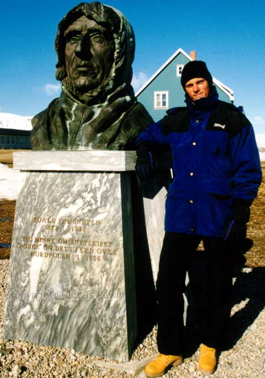
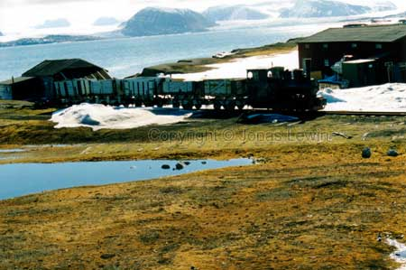

The capital of Svalbard: LongYearByen (The LongYear Village).
|
Roald Amundsen. One of the great explorers. These days it's so much easier to get to Svalbard.
The text says: To the memory of the air ship "Norge" and it's journey over
the north pole. 1926. This is the worlds most northerly railroad. Used in the coal mines that we find a lot here on Svalbard. |